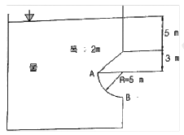
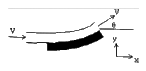
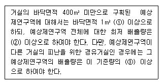

소방설비기사(기계분야) (2011-06-12 기출문제)
1과목: 소방원론
1. 분말소화기의 소화약제로 사용하는 탄산수소나트륨이 열분해하여 발생하는 가스는?
- 일산화탄소
- 이산화탄소
- 사염화탄소
- 산소
(정답률: 64%)

2. 화씨 95도를 켈빈(Kelvin)온도로 나타내면 약 몇 K인가?
- 368
- 308
- 252
- 178
(정답률: 64%)
3. 소화약제로 사용될 수 없는 물질은?
- 탄산수소나트륨
- 인산암모늄
- 중크롬산나트륨
- 탄산수소칼륨
(정답률: 64%)
4. 다음 중 증발잠열(kJ/kg)이 가장 큰 것은?
- 질소
- 할론 1301
- 이산화탄소
- 물
(정답률: 72%)
5. 연소점에 관한 설명으로 옳은 것은?
- 점화원 없이 스스로 불이 붙는 최저온도
- 산화하면서 발생된 열이 축적되어 불이 붙는 최저온도
- 점화원에 위해 불이 붙는 최저온도
- 인화 후 일정시간 이상 연소상태를 계속 유지할 수 있는 온도
(정답률: 52%)
6. 다음 중 증기 비중이 가장 큰 것은?
- Halon 1301
- Halon 2402
- Halon 1211
- Halon 104
(정답률: 67%)
7. 목재건축물의 화재 진행과정을 순서대로 나열한 것은?
- 무염착화 - 발염착화 - 발화 - 최성기
- 무염착화 - 최성기 - 발염착화 - 발화
- 발염착화 - 발화 - 최성기 - 무염착화
- 발염착화 - 최성기 - 무염착화 - 발화
(정답률: 69%)
8. 화재시 이산화탄소를 사용하여 화재를 진압하려고 할 때 산소의 농도를 13vol% 로 낮추어 화재를 진압하려면 공기 중 산화탄소의 농도는 약 몇 vol%가 되어야 하는가?
- 18.1
- 28.1
- 38.1
- 48.1
(정답률: 61%)
9. 다음 중 인화점이 가장 낮은 것은?
- 경유
- 메틸알코올
- 이황화탄소
- 등유
(정답률: 58%)
10. 제 1종 분말소화 약제의 색상으로 옳은 것은?
- 백색
- 담자색
- 담홍색
- 청색
(정답률: 73%)
11. 일반적으로 화재의 진행상황 중 플래시 오버는 어느 시기에 발생하는가?
- 화재발생 초기
- 성장기에서 최성기로 넘어가는 분기점
- 최성기에서 감쇄기로 넘어가는 분기점
- 감쇄기 이후
(정답률: 65%)
12. 버너의 불꽃을 제거한 때부터 불꽃을 올리지 아니하고 연소하는 상태가 그칠 때까지의 시간은?
- 방신시간
- 방염시간
- 잔진시간
- 잔염시간
(정답률: 47%)
13. 유황의 주된 연소 형태는?
- 확산연소
- 증발연소
- 분해연소
- 자기연소
(정답률: 55%)
14. 유류 저장탱크에 화재 발생시 열유층에 의해 탱크 하부에 고인 물 또는 에멀젼이 비점 이상으로 가열되어 부피가 팽창되면서 유류를 탱크 외부로 분출시켜 화재를 확대 시키는 현상은?
- 보일오버
- 롤오버
- 백드래프트
- 플래시오버
(정답률: 69%)
15. 이산화탄소에 대한 설명으로 틀린 것은?
- 무색, 무취의 기체이다.
- 비전도성이다.
- 공기보다 가볍다.
- 분자식은 CO2 이다.
(정답률: 69%)
16. 동식물유류에서 “요오드값이 크다” 라는 의미를 옳게 설명한 것은?
- 불포화도가 높다.
- 불건성유이다.
- 자연발화성이 낮다.
- 산소와의 결합이 어렵다.
(정답률: 69%)
17. 황린과 적린이 서로 동소체라는 것을 증명하는데 가장 효과적인 실험은?
- 비중을 비교한다.
- 착화점을 비교한다.
- 유기용제에 대한 용해도를 비교한다.
- 연소 생성물을 확인한다.
(정답률: 64%)
18. 화재에 대한 설명으로 옳지 않은 것은?
- 인간이 제어하여 인류의 문화, 문명의 달을 가져오게 한 근본적인 존재를 말한다.
- 불을 사용하는 사람의 부주의와 불안정한 상태에서 발생되는 것을 말한다.
- 불로 인하여 사람의 신체, 생명 및 재산상의 손실을 가져다주는 재앙을 말한다.
- 실화, 방화로 발생하는 연소현상을 말하며 사람에게 유익하지 못한 해로운 불을 말한다.
(정답률: 74%)
19. 가연물질이 되기 위한 구비조건 중 적합하지 않은 것은?
- 산소와 반응이 쉽게 이루어진다.
- 연쇄반응을 일으킬 수 있다.
- 산소와의 접촉 면적이 작다.
- 발열량이 크다.
(정답률: 65%)
20. 화재시 계단실내 수직방향 연기상승 속도 범위는 일반적으로 몇 m/s의 범위에 있는가?
- 0.⑤ ~ 0.1
- 0.8 ~ 1.0
- 3 ~ 5
- 10 ~ 20
(정답률: 59%)
2과목: 소방유체역학
21. 물의 압력파에 의한 수격작용을 방지하기 위한 방법 중 적합하지 않은 것은?
- 관로 내의 관경을 축소시킨다.
- 관로 내 유체의 유속을 축소시킨다.
- 수격방지기를 설치한다.
- 펌프의 속도가 급격히 변화하는 것을 방지한다.
(정답률: 70%)
22. 글로브 밸브에 의한 손실을 지름이 10cm 이고 관마찰 계수가 0.025의 관의 길이로 환산한다면 상당 길이는 몇 m 인가? (단, 글로브 밸브의 부차적 손실계수는 10이다.)
- 20
- 25
- 40
- 80
(정답률: 54%)
23. 압축률에 대한 설명으로 틀린 것은?
- 압축률은 체적탄성계수의 역수이다.
- 유체의 체적감소는 밀도의 감소와 같은 뜻을 가진다.
- 압축률은 단위압력 변화에 대한 체적의 변화율을 의미한다.
- 압축률이 작은 것은 압축하기 어렵다.
(정답률: 56%)
24. 다음 중 같은 단위가 아닌 것은?
- J
- kgㆍm2/s2
- paㆍm3
- Nㆍs
(정답률: 45%)
25. 이상기체의 정압비열 CP와 정적비율 CV의 관계식으로 옳은 것은? (단, R은 기체상수이다.)
- CV - CP = R
- CP - CV = R
- CP = CV
- CP / CV = R
(정답률: 56%)
26. 베르누이 방정식 [ P/r + 2/2g + Z = C]을 유도할 때 가정으로 올바르지 않은 것은?
- 마찰이 없는 흐름이다.
- 정상상태의 흐름이다.
- 비압축성유체의 흐름이다.
- 유동장 내 임의의 두 점에 대하여 성립한다.
(정답률: 52%)
27. 관의 지름이 45cm 이고 관로에 설치된 오리피스의 지름이 3cm 이다. 이 관로에 물이 유동하고 있을 때 오리피스의 전후 압력수두 차이가 12cm 이었다. 유량을 계산하면? (단, 유량계수는 0.66이다.)
- 0.03725 m3/s
- 0.0675 m3/s
- 0.000715 m3/s
- 0.00855 m3/s
(정답률: 36%)
28. 유량이 0.5m3/min일 때 손실수두가 5m인 관로를 통하여 20m높이 위에 있는 저수조로 물을 이송하고자 한다. 펌프의 효율이 90%라 할때 펌프에 공급해야 하는 전력은 약 몇 kW 인가?
- 0.45
- 1.84
- 2.27
- 136
(정답률: 51%)
29. 두께가 5mm인 창유리의 내부 온도가 15℃, 외부 온도가 5℃이다. 창의 크기는 1m × 3m 이고 유리의 열전도율이 1.4W/mㆍK이라면 창을 통한 열전달률은 몇 kW인가?
- 1.4
- 5.0
- 5.7
- 8.4
(정답률: 46%)
30. 이상기체를 온도변화 없이 압축시키는 경우 열의 출입 및 내부에너지의 변화를 옳게 표현한 것은?
- 열 방출, 내부에너지 감소
- 열 방출, 내부에너지 불변
- 열 흡수, 내부에너지 증가
- 열 흡수, 내부에너지 불변
(정답률: 45%)
31. 다음 계측기 중 측정하고자 하는 것이 다른 것은?
- Bourdon 압력계
- U자관 미노미터
- 피에조미터
- 열선풍속계
(정답률: 64%)
32. 물의 유속을 측정하기 위하여 피토 정압관(pitot statictube)을 사용하였더니 정압과 정체압의 차이가 5cmHg이다. 수은의 비중이 13.6이라면 유속은 몇 m/s 인가?
- 3.65
- 5.16
- 7.30
- 13.3
(정답률: 42%)
33. 직경 20cm의 소화용 호스에 물이 질량유량 100kg/s로 흐른다. 이때의 평균 유속은 약 몇 m/s 인가?
- 1
- 1.5
- 2.18
- 3.18
(정답률: 52%)
34. 그림에서 호 AB면에 작용하는 수직분력은 약 몇 kN인가?

- 1168.8
- 2323.4
- 976.4
- 568.34
(정답률: 27%)
35. 회전속도 1000 rpm 일 때 송출량 Qm3/min, 전양정 Hm인 원심펌프가 상사한 조건에서 송출량이 1.1Qm3/min가 되도록 회전속도를 증가 시킬 때, 전양정은?
- 0.91H
- H
- 1.1H
- 1.21H
(정답률: 65%)
36. 어떤 기체를 20℃에서 등온 압축하여 압력이 0.2MPa에서 1MPa으로 변할 때 처음과 나중의 체적비는 얼마인가?
- 8 : 1
- 5 : 1
- 3 : 1
- 1 : 1
(정답률: 59%)
37. 표준 대기압 상태인 어떤 지방의 오수 속에 있던 공기의 기포가 수면으로 올라오면서 지름이 2배로 팽창하였다. 이 때 기포의 최초 위치는 수면으로부터 약 몇 m 인가? (단, 기포내의 공기는 Boyle의 법칙에 따른다.)
- 36
- 72
- 108
- 144
(정답률: 35%)
38. 그림과 같이 속도 V인 유체가 정지하고 있는 곡면 깃에 부딪혀 ⍬의 각도로 유동 방향이 바뀐다. 유체가 곡면에 가하는 힘의 x, y 성분의 크기를

- 1-cos⍬ / sin⍬
- sin⍬ / 1-cos⍬
- 1-sin⍬ / cos⍬
- cos⍬ / 1-sin⍬
(정답률: 53%)
39. 저장용기로부터 20℃의 물을 길이 300m, 직경 900mm인 콘크리트 수평 원관을 통하여 공급하고 있다. 유량이 1.25m3/s 일 때 원관에서의 압력강하는 몇 kPa 인가? (단, 물의 동점성계수는 1.31×10-6m2/s 이고, 관마찰계수는 0.023이다.)
- 16.1
- 14.8
- 12.3
- 11.9
(정답률: 45%)
40. 다음 중 유체의 점성과 가장 관련이 적은 것은?
- 중력
- 분자운동
- 분자의 응집력
- 분자의 운동량 수송
(정답률: 54%)
3과목: 소방관계법규
41. 소방시설공사업자가 소방시설공사를 하고자 할 때, 다음 중 옳은 것은?
- 건축허가와 동의만 받으면 된다.
- 완공 후 완공검사만 받으면 된다.
- 소방시설 착공신고를 하여야 한다.
- 건축허가만 받으면 된다.
(정답률: 71%)
42. 다음 중 소방시설 설치유지 및 안전관리에 관한 법률시행령에서 규정하는 소방대상물의 개수명령의 대상이 아닌 것은?(관련 규정 개정전 문제로 여기서는 기존 정답인 3번을 누르면 정답 처리됩니다. 자세한 내용은 해설을 참고하세요.)
- 문화집회 및 운동시설
- 노유자(老幼者) 시설
- 공동주택
- 의료시설
(정답률: 56%)
43. 특수가연물의 품명과 수량기준이 바르게 짝지어진 것은?
- 면화류 - 200kg 이상
- 대팻밥 - 300kg 이상
- 가연성고체류 - 1000kg 이상
- 발포시킨 합성수지류 - 10m3 이상
(정답률: 46%)
44. 특정소방대상물로서 숙박시설에 해당되지 않는 것은?
- 호텔
- 모텔
- 휴양콘도미니엄
- 오피스텔
(정답률: 68%)
45. 소방대장은 화재, 재난ㆍ재해 그 밖의 위급한 상황이 발생한 현장에 소방활동구역을 정하여 소방활동에 필요한 자로서 대통령령이 정하는 자 외의 자에 대하여는 그 구역에의 출입을 제한할 수 있다. 다음 소방활동 구역에 출입할 수 없는 자는?
- 소방활동구역 안에 있는 소방대상물의 소유자ㆍ관리자 또는 점유자
- 전기ㆍ가스ㆍ수도ㆍ통신ㆍ교통의 업무에 종사하는 자로서 원활한 소방활동을 위하여 필요한 자
- 의사ㆍ간호사 그 밖의 구조ㆍ구급업무에 종사하는 자와 취재인력 등 보도업무에 종는 자
- 소방대장의 출입허가를 받지 않은 소방대상물 소유자의 친척
(정답률: 67%)
46. 화재의 예방조치 등을 위한 옮긴 위험물 또는 물건의 보관기간은 규정에 따라 소방본부나 소방서의 게시판에 공고한 후 어느 기간까지 보관하여야 하는가?
- 공고기간 종료일 다음날로부터 5일
- 공고기간 종료일로부터 5일
- 공고기간 종료일 다음날부터 7일
- 공고기간 종료일 7일
(정답률: 67%)
47. 소방대상물이 공장이 아닌 경우 일반 소방시설설계업의 영업범위는 연면적 몇 제곱미터 미만인 경우인가?
- 5000
- 10000
- 20000
- 30000
(정답률: 35%)
48. 특정소방대상물의 방화관리자의 업무가 아닌 것은?
- 소방시설 그 밖의 소방관련시설의 유지ㆍ관리
- 의용소방대의 조직
- 피난시설 및 방화시설의 유지ㆍ관리
- 화기 취급의 감독
(정답률: 59%)
49. 둘 이상의 위험물을 같은 장소에서 저장 또는 취급하는 경우에 있어서 당해 장소에서 저장 또는 취급하는 각 위험물의 수량을 그 위험물의 지정수량으로 각각 나누어 얻은 수의 합계가 얼마 이상인 경우 당해 위험물은 지정수량 이상의 위험물로 보는가?
- 0.5
- 1
- 2
- 3
(정답률: 57%)
50. 소방본부장 또는 소방서장은 원활한 소방활동을 위하여 소방용수시설 및 지리조사 등을 실시하여야 한다. 실시기간 및 조사회수가 옳은 것은?
- 1년 1회 이상
- 6월 1회 이상
- 3월 1회 이상
- 월 1회 이상
(정답률: 55%)
51. 소방시설공사 착공신고 후 소방시설의 종류를 변경한 경우에 조치사항으로 적정한 것은?
- 건축주는 변경일로부터 30일 이내에 소방본부장 또는 소방서장에게 신고하여야 한다.
- 소방시설공사업자는 변경일로부터 30일 이내에 소방본부장 또는 소방서장에게 신고하여야 한다.
- 건축주는 변경일로부터 7일 이내에 소방본부장 또는 소방서장에게 신고하여야 한다.
- 소방시설공사업자는 변경일로부터 7일 이내에 소방본부장 또는 소방서장에게 신고하여야 한다.
(정답률: 38%)
52. 다음의 건축물 중에서 건축허가 등을 함에 있어 미리 소방본부장 또는 소방서장의 동의를 받아야 하는 범위에 속하는 것은?
- 바닥면적 100m2으로 주차장 층이 있는 시설
- 연면적 100m2으로 청소년시설이 있는 건축물
- 바닥면적 100m2으로 무창층 공연장이 있는 건축물
- 연면적 100m2의 노유자 시설이 있는 건축물
(정답률: 45%)
53. 공공의 소방활동에 필요한 소화전ㆍ급수탑ㆍ저수조는 누가 설치하고 유지ㆍ관리 하여야 하는가?
- 소방방재청장
- 행정안전부장관
- 시ㆍ도지사
- 소방본부장
(정답률: 67%)
54. 소방시설공사가 완공되고 나면 누구에게 완공검사를 받아야 하는가?
- 소방시설 설계업자
- 소방시설 사용자
- 소방본부장 또는 소방서장
- 시ㆍ도지사
(정답률: 63%)
55. 다음 중 소방기본법상 소방대가 아닌 것은?
- 소방공무원
- 의무소방원
- 자위소방대원
- 의용소방대원
(정답률: 66%)
56. 자동화재탐지설비등 대통령령으로 정하는 소방시설에 하자가 있을 때, 관계인에 의해 하자발생에 관한 통보를 받은 공사업자는 며칠 이내에 이를 보수하거나 보수일정을 기록한 하자보수계획을 관계인에게 서면으로 알려야 하는가?
- 1일
- 3일
- 5일
- 7일
(정답률: 53%)
57. 근린생활시설 중 일반목욕장인 경우 연면적 몇 m2 이상 이면 자동화재 탐지설비를 설치해야 하는가?
- 500
- 1000
- 1500
- 2000
(정답률: 51%)
58. 다음 중 화재를 진압하거나 인명구조 활동을 위하여 사용하는 소방활동 설비에 포함되지 않는 것은?
- 비상콘센트설비
- 무선통신보조설비
- 연소방지설비
- 자동화재속보설비
(정답률: 58%)
59. 다음 위험물 중 자기반응성 물질은 어느 것인가?
- 황린
- 염소산염류
- 알칼리토금속
- 질산에스테르류
(정답률: 54%)
60. 특정소방대상물의 방화관리대상 관계인이 방화관리자를 선임한 날부터 소방본부장 또는 소방서장에게 신고하여야 하는 기간은?
- 7일 이내
- 14일 이내
- 20일 이내
- 30일 이내
(정답률: 52%)
4과목: 소방기계시설의 구조 및 원리
61. 제연설비에서 통로상의 제연구역은 최대 얼마까지로 할 수 있나?
- 수평거리로 70m 까지
- 직경거리로 50m 까지
- 직선거리로 30m 까지
- 보행중심선의 길이로 60m 까지
(정답률: 69%)
62. 다음 중 소화기의 설치 장소별 적응성에서 통신기기실에 적응성이 없는 수동식 소화기는?
- 이산화탄소 소화기
- 할로겐화합물 소화기(1301)
- 액체 소화기
- 청정소화약제 소화기
(정답률: 74%)
63. 물분무 소화설비의 배관재료로서 가장 부적합한 재료는?
- 연관
- 배관용 탄소강관(백관)
- 배관용 탄소강관(흑관)
- 압력배관용 탄소강관
(정답률: 76%)
64. 분말소화 설비의 배관 청소용 가스는 어떻게 저장 유지 관리하여야 하는가?
- 축압용 가스용기에 가산 저장 유지
- 가압용 가스용기에 가산 저장 유지
- 별도 용기에 저장 유지
- 필요시에만 사용하므로 평소에 저장 불필요
(정답률: 72%)
65. 제연구획은 소화활동 및 피난상 지장을 가져오지 않도록 단순한 구조로 하여야 하며 하나의 제연구역의 면적은 얼마로 하여야 하는가?
- 700m2 이내
- 1000m2 이내
- 1300m2 이내
- 1500m2 이내
(정답률: 76%)
66. 건식 연결송수관 설비에서 설치순서로 적당한 것은?
- 송수구 - 자동배수밸브 - 체크밸브
- 송수구 - 체크밸브 - 자동배수밸브
- 송수구 - 자동배수밸브 - 체크밸브 - 자동배수밸브
- 송수구 - 자동배수밸브 - 체크밸브
(정답률: 59%)
67. 5층 건물의 연면적 65000m2인 소방대상물에 설치되어야 하는 소화수조 또는 저수조의 저수량은 최소 얼마 이상이 되도록 하여야 하는가?(단, 각층의 바닥면적은 동일하다)
- 180m3 이상
- 240m3 이상
- 200m3 이상
- 220m3 이상
(정답률: 52%)
68. 이산화탄소 소화설비의 자동식 기동장치 설치기준으로 적합하지 않은 것은?
- 기동장치는 자동화재탐지설비의 감지기의 작동과 연동 하여야 할 것
- 자동식 기동장치에는 수동으로도 기동할 수 있는 구조로 할 것
- 가스 압력식 기동용 가스용기의 용적은 1ℓ이상으로 할 것
- 기동용 가스용기에 저장하는 이산화탄소의 충전비는 1.3 이상으로 할 것
(정답률: 57%)
69. 연결송수관 설비의 방수구 설치에서 지하가 또는 지하층의 바닥면적의 합계가 3000m2 이상일 때 이층의 각 부분으로부터 방수구까지의 수평거리 기준은?
- 25m
- 50m
- 65m
- 100m
(정답률: 48%)
70. 거실제연설비의 배출량 기준이다. ( )에 맞는 것은?

- ① 0.5m3/min, ② 10000m3/hr, ③ 1.5배
- ① 1m3/min, ② 5000m3/hr, ③ 1.5배
- ① 1.5m3/min, ② 15000m3/h,r ③ 2배
- ① 2m3/min, ② 5000m3/hr, ③ 2배
(정답률: 62%)
71. 아파트의 각 세대별 주방에 설치되는 자동식 소화기의 설치기준에 적합하지 않은 항목은?
- 감지부의 설치위치는 유효설치 높이로 환기구의 중앙근처에 설치
- 탐지부는 수신부와 분리하여 설치
- 자동식소화기의 가스차단장치는 주방배관의 개폐밸브로부터 5m 이하의 위치에 설치
- 수신부는 열기류 또는 습기등과 주위온도에 영향을 받지 아니하는 장소에 설치
(정답률: 64%)
72. 연결송수관설비의 가압송수장치 설치에서 방수구의 수량이 가장 많이 설치된 층이 6개라면 이 때 필요한 펌프의 분단 토출량은 얼마 이상이어야 하는가?(오류 신고가 접수된 문제입니다. 반드시 정답과 해설을 확인하시기 바랍니다.)
- 3600ℓ
- 4800ℓ
- 6000ℓ
- 6400ℓ
(정답률: 17%)
73. 스프링클러 헤드의 배치에서 랙크식 창고에서는 방호대상물의 각 부분으로부터 수평거리 (헤드의 살수반경)는 몇 m 이하인가?
- 1.7
- 2.3
- 2.5
- 3.2
(정답률: 55%)
74. 배관 내에 헤드까지 물이 항상 차 있어 가압된 상태에 있는 스프링클러 설비는?
- 폐쇄형 습식
- 폐쇄형 건식
- 개방형 습식
- 개방형 건식
(정답률: 73%)
75. 어느 소방대상물의 옥외소화전이 6개 설치되어 있다. 옥외소화전 설비를 위해 필요한 최소 수원의 수량은?
- 10m3
- 14m3
- 21m3
- 35m3
(정답률: 65%)
76. 소방대상물의 설치장소별 피난기구중 의료시설, 노유자 시설, 근린 생활시설 중 입원실이 있는 의원 등의 시설에 적응성이 가장 떨어지는 피난기구는?
- 피난교
- 구조대(수직강하식)
- 피난사다리(금속제)
- 미끄럼대
(정답률: 60%)
77. 할로겐 화합물 소화약제의 저장용기에서 가압용 가스용기는 질소가스가 충전된 것으로 하고, 그 압력은 21℃에서 최대 얼마의 압력으로 축압되어야 하는가?
- 2.2MPa
- 3.2MPa
- 4.2MPa
- 5.2MPa
(정답률: 48%)
78. 포소화설비의 포헤드를 설치하고자 한다. 방호대상 바닥면적이 40m2일 때 필요한 최소 포헤드 수는?
- 4개
- 5개
- 6개
- 8개
(정답률: 57%)
79. 11층 이상의 소방대상물에 설치하는 연결송수관 설비의 방수구를 단구형으로 설치하여도 되는 것은?
- 스프링클러 설비가 유효하게 설치되어 있고 방수구가 2개소 이상 설치된 층
- 오피스텔의 용도로 사용되는 층
- 스프링클러 설비가 설치되어 있지 않은 층
- 아파트의 용도 이외로 사용되는 층
(정답률: 65%)
80. 연결살수설비를 전용헤드로 건축물의 실내에 설치할 경우 헤드간의 거리는 약 몇 m 인가? (단, 헤드의 설치는 정방향 간격이다.)(오류 신고가 접수된 문제입니다. 반드시 정답과 해설을 확인하시기 바랍니다.)
- 2.3m
- 3.5m
- 3.7m
- 5.2m
(정답률: 14%)